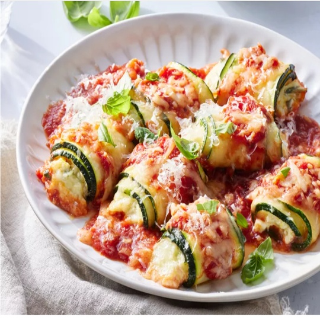

Zucchini Rollatini

Description
Zucchini Rollatini is a fresh, low-carb twist on a classic
Italian comfort dish. Thinly sliced zucchini ribbons are lightly grilled and
rolled around a savory blend of herb-infused ricotta, mozzarella, and
Parmesan cheese. Simmered in a vibrant marinara sauce and baked until
golden and bubbly, these delicate rolls offer all the rich flavors of
traditional lasagna with a light, garden-fresh finish.
Ingredients
- 2 (12 ounce) zucchinis, sliced lengthwise into 18 (1/8-inch-thick) planks
- 2 tablespoons extra-virgin olive oil
- 1 tablespoon kosher salt, divided
- 1 cup whole milk ricotta cheese, patted dry
- 1 large egg, lightly beaten
- 3 tablespoons chopped fresh basil, plus more for garnish
- 2 teaspoons chopped fresh oregano
- 2 teaspoons grated lemon zest
- 1 teaspoon freshly ground black pepper
- 2 cloves garlic, grated
- 1 1/2 cups shredded whole milk mozzarella cheese, divided
- 1/2 cup freshly grated Parmesan cheese, divided
- Cooking spray
- 2 cups jarred marinara sauce (such as Rao’s®), divided
Steps
- Gather all ingredients. Preheat the oven to 425°F (220°C) with racks in the top third and lower third
positions.
- Toss zucchini slices with oil and 2 teaspoons salt on 2 large rimmed baking sheets; arrange in a single
layer. Bake until tender, about 10 minutes, rotating baking sheets from top to bottom halfway through
cooking time.
- Remove from the oven and let zucchini slices cool slightly, about 5 minutes. Reduce oven temperature to
375°F (190°C).
- Meanwhile, stir together ricotta, egg, basil, oregano, lemon zest, pepper, garlic, 1 cup of the mozzarella,
1/4 cup of the Parmesan, and remaining 1 teaspoon salt in a medium bowl until combined.
- Lightly coat a 13x9-inch baking dish with cooking spray. Spread 1 cup marinara sauce evenly in the bottom of
the baking dish.
- Gently pat zucchini slices dry with paper towels. Spoon about 1 tablespoon plus 1 teaspoon ricotta mixture
on one end of a zucchini slice; roll up and place seam-side down into the marinara in the dish. Repeat with
remaining zucchini slices and ricotta mixture.
- Pour remaining 1 cup marinara evenly over the center of zucchini rolls, leaving roll ends exposed. Sprinkle
evenly with remaining 1/2 cup mozzarella and 1/4 cup Parmesan.
- Bake until bubbling, slightly browned, and zucchini is very tender, about 25 minutes. Let rest 10 minutes.
Garnish with basil before serving.
Home